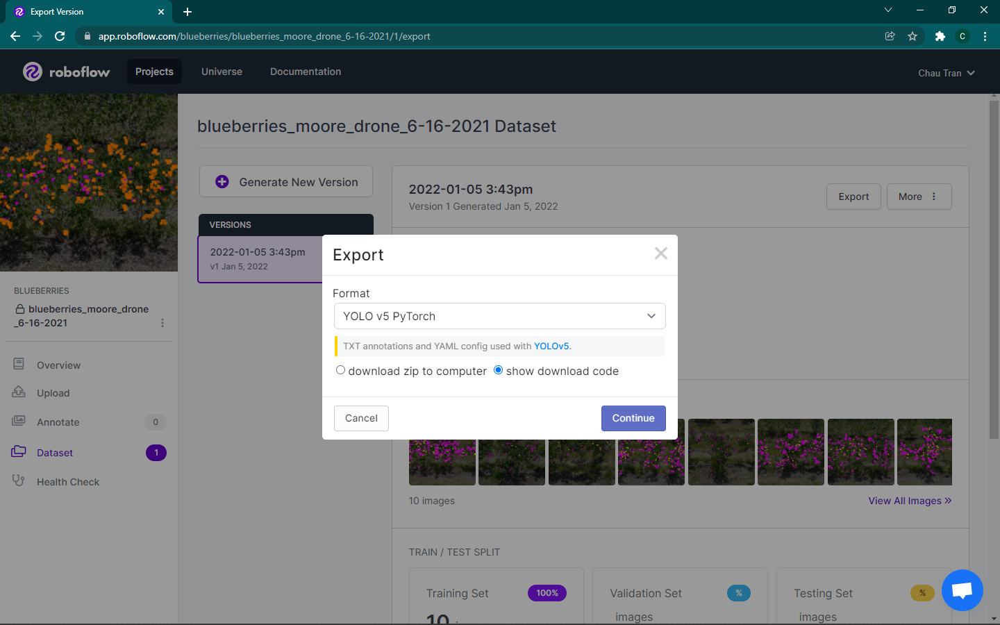

YOLOv5¶
Note
Make sure you have been added to the team’s Roboflow and you have access the Lambda server before the following steps.
Repository Setup¶
Login to the Lambda server. cd into your own directory in the /data/drone project folder.
To clone Ocho-lytic’s YOLOv5 repository, run:
git clone https://github.com/ultralytics/yolov5
You should now have the repository cloned into your personal directory.
Custom Data Preparation¶
Before training with a YOLOv5 model, a dataset in YOLOv5 format is needed.
Step 1¶
First, select the Roboflow dataset you would like to use:

In this example, we will use Brandon’s dataset.
Step 2¶

If there are no versions available make one and apply the appropriate preprocessing and augmentation steps. Most of the time, this would mean applying NO preprocessing or augmentations at all since we perform those steps outside of Roboflow.
Step 3¶
After you have selected a dataset version, click Export. This modal should pop up:

Click the dropdown bar under Format and choose YOLO v5 PyTorch. Also make sure you have the show download code radio box selected. Now, click Continue.
Step 4¶
Afterwards, you should see this modal:

Select the Terminal tab and make sure to copy the command line command - you will paste it into Lambda in the next few steps.
Step 5¶
Go back into the Lambda server and cd into the yolov5 repository that you have cloned.
Next, cd into the data directory inside yolov5. Then, make a new dataset:
mkdir blueberry_dataset
(You can really name it anything you want - it does not matter.)
Step 6¶
Next, cd into this new directory you have made.
To download the dataset from Roboflow, paste the command you have copied. The dataset along with its annotations should be dumped into the current directory that you are in.
Step 7¶
Now, we need to configure the data.yaml file so it works with our current file structure.
Edit the data.yaml file (you can use vim or nano if you’re doing it from the terminal) and change the following:
Change train: ../train/images to train: ./data/blueberry_dataset/train/images
Change train: ../valid/images to train: ./data/blueberry_dataset/valid/images (if there is one, if not, use the same directory as training)
From here, you are ready to train on this data.
Training¶
cd back into the top-level of the yolov5 repository.
Very basically, you can train on the data with some default configurations with:
Note
Also make sure you have activated the Python environment!
python train.py --data ./data/blueberry_dataset/data.yaml
To configure parameters like epochs, output location, etc., I highly recommend checking out the train.py file for a list of more arguments you can pass in. It is located in the parse_opt function.
Afterwards, the trained weights should be outputted to the directory runs/train/exp[number]/weights. These weights (best and last) should be in .pt format, for which you’ll feed into the inference step.
Inference¶
To run the model on a particular image/directory of images/video, make sure you have the file somewhere on Lambda. Then, use the detect.py script:
python detect.py --weights [the location of your .pt file] --source [the location of the image/images/video/videos that you want to infer on] --output [where the results will be dumped]
Again, you can change A LOT more parameters. Look into the parse_opt function of detect.py for a full list of options.